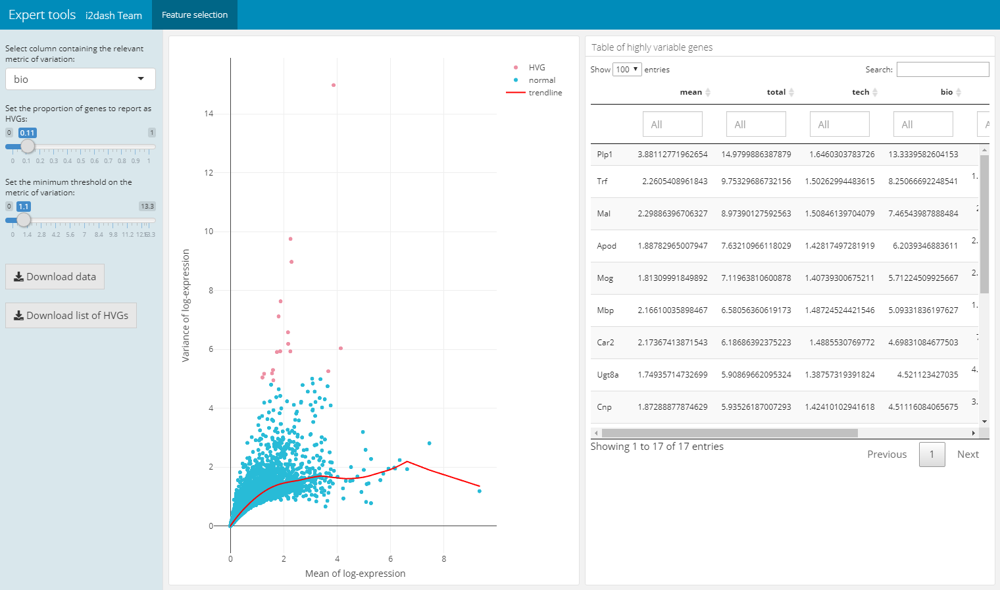
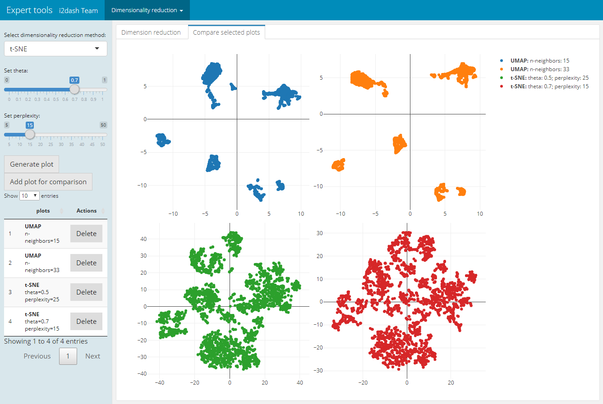

Use-case 3: Visual parameter selection
Arsenij Ustjanzew
arsenij.ustjanzew@mpi-bn.mpg.deJens Preussner
jens.preussner@mpi-bn.mpg.de6 November 2020
vis_parameter_selection.RmdVignette last complied on 2020-11-06. i2dash is licenced under MIT + file LICENSE.
Introduction
The following dashboard provides tools of the i2dash.scrnaseq package, which are useful during the process of data analysis but are not reasonable for the final report. The pre-defined pages enable the selection of features and optimal paramters for a low dimensional embedding. Also these pages are useful for demonstration purposes and teaching. You can inspect the demo of the resulting dashboard here.
Data preparation
In this use-case the mouse brain single-cell RNA-seq data set from Zeisel et al. (2015) 1 is used. We compute the log-transformed normalized expression values from the count-matrix by using the logNormCounts() function from the scater package.
# load data library(scRNAseq) library(scater) sce <- ZeiselBrainData() colData(sce)$sex <- as.factor(colData(sce)$sex) # log normalization sce <- logNormCounts(sce)
Creating an i2dashboard object
Simmilar to the previous use-cases, we initialize a new object of class i2dashboard.
library(i2dash) library(i2dash.scrnaseq) # Creating a new i2dashboard class object dashboard <- i2dashboard( title = "Parameter Selection", author = "i2dash Team", interactive = TRUE, theme = "yeti", datadir = "datadir_use_case3" )
Feature selection tool
The following pre-defined page can be created by the function add_feature_selection_page() and allows the quantification of the per-gene variation and the exploration of the threshold on the metric of variation to get the desired set of highly variable genes (hvg). The function creates a page containing a scatter plot of the per-gene variation of log-expression against the mean log-expression and a table with features and their metrics of variation. The sidebar on the left contains Shiny inputs, by which you can color highlight the highly variable genes in dependency to the proportion and minimal threshold of the relevant variation metric. Also you can download the color highlighted hvg’s or the entire variation metrics table. With the parameter use_function we can define the function, which should be used for the quantification of per-gene variation. We can choose one of scran’s functions (“modelGeneVar”, “modelGeneVarByPoisson”, “modelGeneCV2”, “modelGeneCV2WithSpikes”, “modelGeneVarWithSpikes”). Note, that this page only works in the interactive mode with the use of Shiny.
dashboard %<>% i2dash.scrnaseq::add_feature_selection_page( object = sce, exprs_values = "logcounts", use_function = "modelGeneVar", menu = NULL )

Choose dimension reduction
For plotting or clustering cells to identify cells with similar transcriptomic profiles of thousands of genes, it is necessery to reduce the number of separate dimensions. i2dash.scrnaseq provides a pre-defined page, which calculates the dimension reduction from count tables and enables the inspection of specific key paramters. This allows the user to compare reduced dimension plots with different values for key parameters and find the optimal values for your dataset. The user can choose interactively between the the non-linear t-stochastic neighbor embedding (t-SNE) merthod or the non-linear uniform manifold approximation and projection (UMAP) method.
t-SNE finds a low-dimensional representation of the data that preserves the distances between each point and its neighbours in the high-dimensional space. With add_dimred_comparison_page() we can inspect the “perplexity” parameter that determines the granularity of the visualization as well as the “theta” parameter, that describes the accuracy of optimization. 2
As described in the book “Orchestrating Single-Cell Analysis with Bioconductor” 3 the UMAP visualization, compaired to t-SNE, tends to have more compact visual clusters with more empty space between them. It also attempts to preserve more of the global structure than t-SNE. From a practical perspective, UMAP is much faster than t-SNE, which may be an important consideration for large datasets. The page allows the verification of the number of neighbours (“n_neighbors”), which has a great effect on the granularity of the output. 4
In the next step we calculate the variance of the log-expression profiles for each gene and get the top thousand highly variable genes with functions from the package scran. We use these genes to subset the sce object and use them in the dimensionality reduction algorithm.
library(scran) hvg <- modelGeneVar(sce) top.hvg <- getTopHVGs(hvg, n=1000)
The page we create with add_dimred_comparison_page() has two tabs “Dimension reduction” and “Compare selected plots”. By adjusting the parameters in the sidebar and clicking on the “Generate plot” button the scatterplot is generated in the “Dimension reduction” tab. If we want to compare the current plot representing the specified parameters with other dimension reduction plots, we click the button “Add plot for comparison”. The plot is then listed in the table of the sidebar. It is also possible to delete specific plots from the table by clicking the delete button in the row of the respective plot. In the tab “Compare selected plots” all saved plots are visualized in a grid layout.
dashboard %<>% i2dash.scrnaseq::add_dimred_comparison_page( object = sce, exprs_values = "logcounts", seed = 100, subset_row = top.hvg )
| Tab: “Dimension reduction” | Tab: “Compare selected plots” |
|---|---|
 |
 |
Assembling the dashboard
i2dash::assemble(dashboard, file = "visParameter.Rmd", exclude = "default")
Zeisel A. et al. (2015). Brain structure. Cell types in the mouse cortex and hippocampus revealed by single-cell RNA-seq. Science 347(6226), 1138-42.↩︎
Further information on dimensionsionality reduction for visualization here.↩︎
Further information on dimensionsionality reduction for visualization here.↩︎